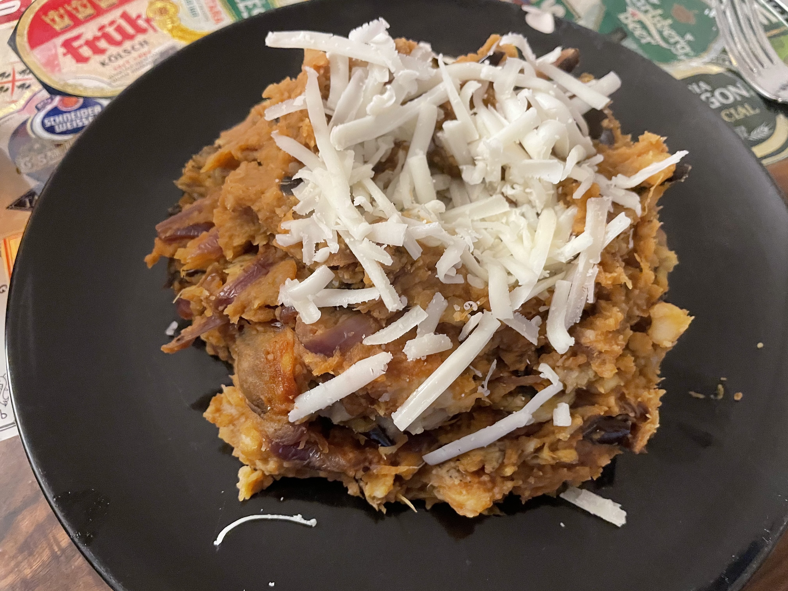

Italiaanse stamppot met aubergine
Italian-style aubergine stamppot
vegetraian, dutch, stamppot, vegetarische, nederlandse keuken
Preparation time: 45 mins
2-3 portions

Igredients
- 1kg soft-cooking potatoes, russet works fine)
- 2 aubergines (approx. 450g)
- 1 big red onion)
- 3 tbsp. extra virgin olive oil
- 350g button mushrooms / champignons (quartered)
- tomato paste (140g can)
- 100g of ripened sheep cheese (shredded)
- coarse salt
Prep
- Cut aubergines lengthwise into 4 parts of approximately equal thickness. Lightly brush them with olive oil, lay them out on a siblge layer on a cookie sheet and sprinkle with coarse salt (about 2 tsp). Bake (from cold) in the oven at 180°C for 45 minutes until lightly charred and browning. They should be very aromatic and loose about 20% water mass, your kitchen is goign to smell great.
- Meanwhile, peel and cut potatoes into ~4-5cm cubes and place in a large pot. Fill up with cold tap water until the potatoes are completely submerged. Bring to a rolling boil and cook until the potatoes are soft enough than a fork easily passes through (about 15-20 minutes).
- While the potatoe are boiling, slice the red onion(can be rings, or slivers) and fry with remaining olive oil in a deep pan. Once the onion softens, add the quartered mushrooms and continue to pan fry at medium / medium high heat.
- Once the mushrooms and onions reach a soft and lightly seared consistency, add the tomato paste directly to the pan and toss with a spatula. Turn off the heat once the vegetables are fully coated in tomato pate.
- Remove the aubergines from the oven and allow to cool; once cold enough to handle, cut roasted aubergine into 2-3cm chunks. Drain the potatoes and let residual moisture evaporate for 2 minutes. Combine aubergie and potatoes and mash together until a homogenous but not smooth consistency is achieved with a masher. Fold in onion, mushroom, tomato portion from the pan.
- Serve immediately with a handful of coursely grated sheep cheese on top.
Eet Smakelijk!
recipe inspired by / adapted from Albert Heijn NL